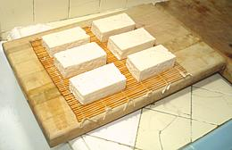
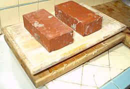
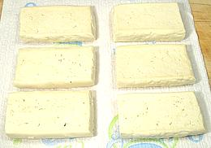
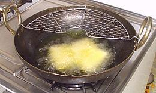
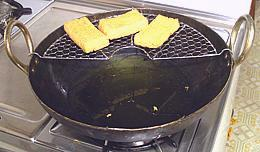

This form is easy to make for anyone with some oil and something to heat it in. The tofu must be cut to size as desired, then pressed well to remove most of the water. Generally this is done by spreading a towel over a slanted board, arranging the tofu over it and covering it with another board with heavy weights on it.
The outside is crisp and light brown while the inside is white and spongy. You can eat them as-is, but they are commonly subjected to further cooking of some sort. While generally put to other uses these agé can be stuffed if the puffy kind aren't commercially available and the hassle of making them at home is not practical. You do need to scoop some of the white inside out before stuffing.
The photo shows both the traditional triangular form and the rectangular form more common today. The rectangular pieces were 3.75 x 2.13 x 0.80 and weighed 2-5/8 ounces. In other words, a 19 ounce block has shrunk to less than 8 ounces - but gained considerable calories due to oil. The photo specimens were fried quite long and have a fairly thick crust - shorter frying may be desirable for some applications.
More on Tofu.
 Start with blocks of regular Soft tofu and cut into pieces that will result in the desired size (see below). Why not start with Firm tofu which already has less water? Because then it wouldn't be Japanese, now would it?
Your press board should be somewhat slanted so liquid will drain
off into the sink (retired cutting boards are great for this purpose).
Most people use a dishtowel or cloth napkin instead of the bamboo mat
shown in the photo (which drains faster but leaves a pattern on one
side). Each of two 19 ounce blocks of tofu has been cut into thirds and
set on the mat. If you're doing only one block set the slices near the
sink end and use a spacer (about the height of the finished blocks -
I use a wine cork) between the boards at the counter end and put the
weights just an inch inboard from directly over the tofu slices.

Here the press is in operation with the top board on and bricks for weights.
Once the tofu was partially pressed I added a third brick across the two.
I let the tofu press for 3 hours and by then it was quite firm and no
more water was dripping out. 4 or 5 hours wouldn't hurt though.

Remove any surface water from the blocks with paper towels. The photo shows
fully pressed blocks. Originally they were 1.3 inches thick and weighed 6.3
ounces each. After pressing they were 0.8 inches thick and weighed 3.8 ounces
each.
 Heat plenty of oil to 375°F/190°C and fry the tofu to the degree desired. When the blocks float to the surface separate them and turn them over once or twice for even frying.
Here three rectangular blocks of tofu are frying in my favorite deep fry rig. That's a 14 inch Indian kadhai charged with Olive Pomace oil and fitted with a wire base and draining rack designed for Chinese woks. The geometry of the kadhai is much better than a wok for deep frying and results in less oil splatter than with any other device (they do a lot of deep frying in India and can't afford to waste oil). Actually tofu splatters a lot less than when frying meat.
Olive Pomace oil provides the same health profile as regular olive
oil but goes to a very high temperature (460°F/240°C), is more
resistant to heat degradation than peanut oil (1/3 as much
polyunsaturated fat) and imparts no olive flavor to whatever is frying.
For more information see our page
Cooking Oils.

Here finished blocks rest on the drainage rack. A final draining on paper
towels will finish the operation. The blocks are now 0.80 inches thick and
weigh 2.6 ounces each, down from the original 6.3 ounces - but the calories
will have gone up significantly due to oil absorption.